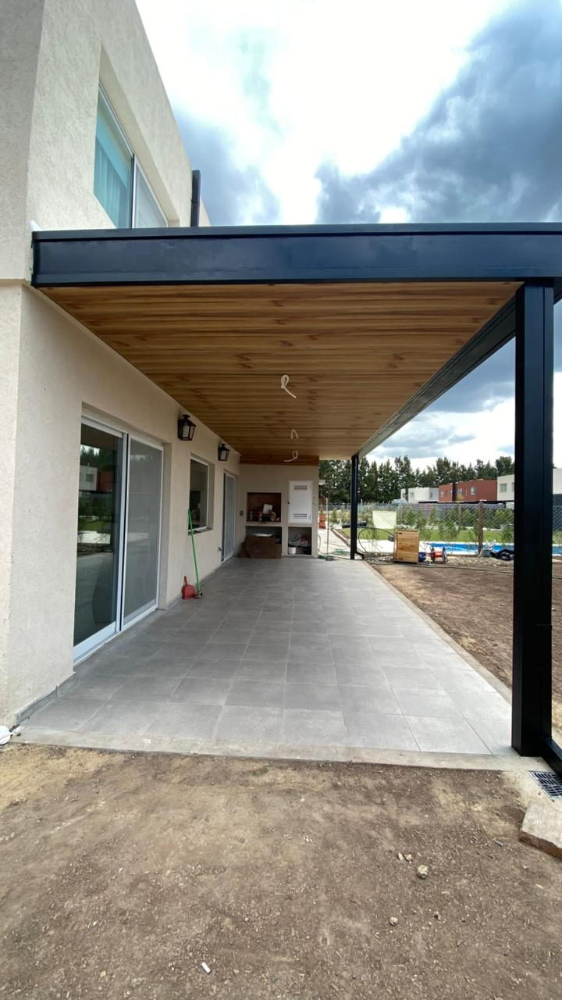

Techos opacos

Cubiertas tradicionales para cuando lo que se busca es protección total, sin componente traslúcido — o combinadas con sectores de vidrio.
Sistemas y materiales admitidos
- Tejas sobre estructura de madera
- Chapas sobre estructura de madera
- Chapas sobre estructura metálica
- Posibilidad de realizar "techos mixtos" combinando sectores traslúcidos
Cómo trabajamos
- Estructura calculada según luces y cargas del techo